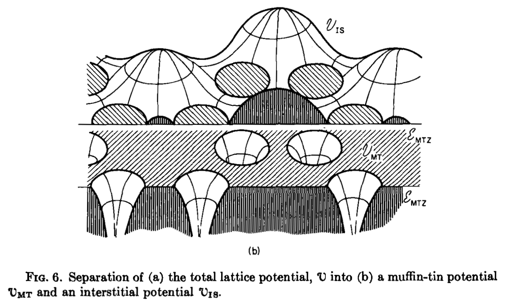

| categories:Bookclub
ICL Bookclub - Ziman Chapter 3
A little update to the book club. It’s going well! We’ve decided to work our way through John M. Ziman’s Principles of the Theory of Solids (2nd Edition). I really like this text, as I find the style very agreeable. It’s very conversational, in it’s best bits it feels like standing at a black-board having something explained just to you, the reader.
§ 1 introduces periodicity as the central theme of solid state physics, showing how the translational symmetry leads to multiply periodic functions, which then leads to Bloch’s theorem (that the energy eigenstates in a crystal can be written as a phase-factor / plane wave). It then builds the Brillouin zone, and introduces periodic boundary conditions.
§ 2 applies this mathematical machinery to lattice vibrations (phonons). The construction of the dynamic matrix is described, and then a simple 1D diatomic chain is used to show how the bands split off & form an optical mode. The Ewald summation is introduced as needed when reversing from the enthalpy of formation of an ionic crystal back to the force coefficients. The van Hove singularities in the lattice spectrum are described, as arising from inevitable saddle-points in the potential energy surfaces. § 2.11 describes phonon-phonon interactions, but at a level that may be useful to get some more science out of calculations with phono3py and similar software, § 2.12 treats imperfect lattices, and show how to embed defect-force pairs as a perturbation to the periodic dynamic matrix. These last two sections are actually really useful for work we’re doing currently.
§ 3 describes electron states in the material, introducing them via nearly free electrons. Its really quite dense, and dives into the state of the art for solving the electronic structure problem in the late 60s. It’s really nice to see where the theory underlying most of today’s periodic electronic structure codes comes from, but it’s also quite heavy going! For this reason we are re-reading this chapter separately for this week.
Some other more verbose Ziman publications in this area are given below.
Dear Solid-State Book Clubbers,
This week we are reading (again) Chapter 3 of Ziman’s “Principles of the theory of solids” (2nd edition). Muffin tins, pseudo potentials, Green’s functions and the orthogonalised plane waves.
–> 5PM level 2 in the RSM, as usual, Thurs 26th January 2017.
Additional Ziman Review papers (really book chapters) that may be useful are:-
- 1971 - The Calculation of Bloch Functions https://doi.org/10.1016/S0081-1947(08)60491-9
This goes into much more detail, and is less terse than chapter 3. It also has some of the most surreal (and beautiful!) diagrams I’ve seen in a scientific publication:

- 1962 - Electrons in metals: A short guide to the Fermi surface https://doi.org/10.1080/00107516208205311
This older paper can also be useful; it’s sort of a condensed form of what became the book we are reading, but presents the material from a slightly different point of view.